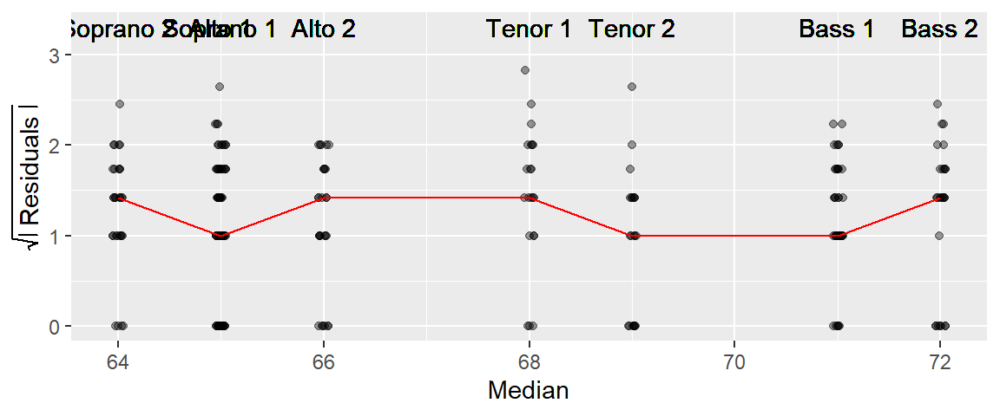
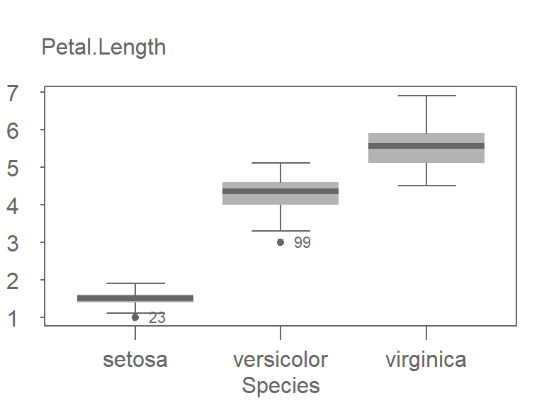
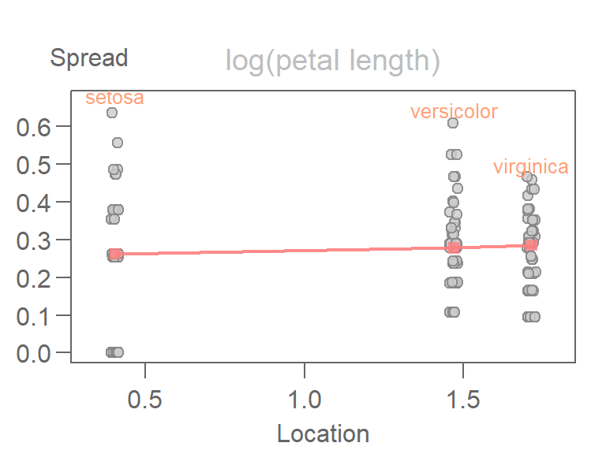
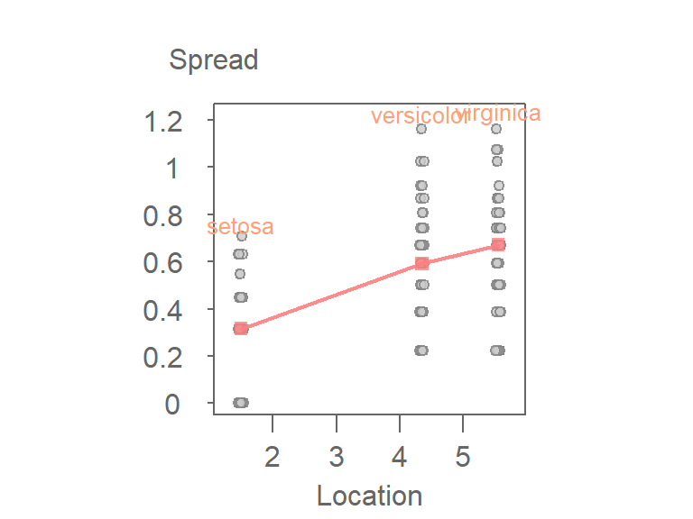
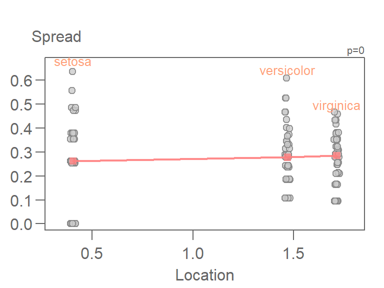
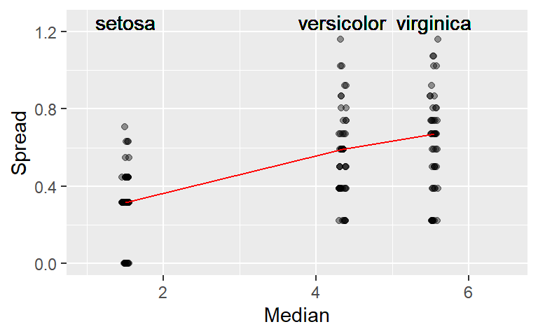
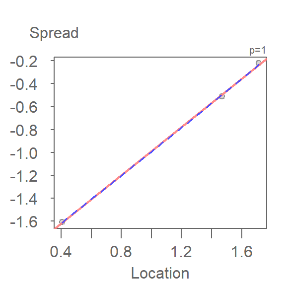
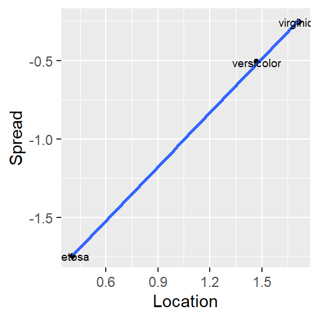

| dplyr | ggplot2 | tukeyedar |
|---|---|---|
| 1.1.4 | 3.5.2 | 0.5.0 |
23 Diagnosing Unequal Spread: Spread-Location and Spread-Level Plots
In the previous chapters, we explored how residuals can be used to assess model fit and how variability can be decomposed into explained and unexplained components. A key assumption in those analyses was that the residuals had a consistent spread across all levels of the fitted values-a property known as homoscedasticity.
In this chapter, we turn our attention to situations where that assumption may not hold. Specifically, we explore how the spread of residuals may change as a function of location, and how to visualize and address such patterns using spread-location and spread-level plots.
23.1 The spread-location plot
The s-l plot visualizes the relationship between the residuals and the location for each batch of data (typically the median, due to its robustness against outliers) . The residuals are expressed as:
\[ spread_{i,grp} = \sqrt{|y_{i,grp} - median(y_{grp})|} \] \[ location_{grp} = median(y_{grp}) \]
For example, the following is an s-l plot of petal length vs species from the iris dataset.

The red line in the plot connects the median values of each batch of residuals. It helps identify the type of relationship between spread and location. If the line increases monotonically upward, there is an increasing spread as a function of increasing location; if the line decreases monotonically downward, there is a decreasing spread as a function of increasing location; and if the line is neither increasing nor decreasing monotonically, there is no change in spread as a function of location.
The s-l plot in the iris dataset suggests that the residuals increase monotonically with an increase in the fitted median value. Note that the x-axis is not categorical, it shows the median values for each species group.
Though not as effective in highlighting the heterogeneity in spread as in the s-l plot, the increase in spread can sometimes be observed in a boxplot of the data as shown in the following plot.

Here, the increasing width of the IQRs is noticeable.
23.2 Stabilizing Spread with a Transformation
When spread increases or decreases systematically with location, it often indicates that a transformation of the response variable may be needed. The goal is to find a transformation that makes the spread more uniform across levels of the fitted values—thereby improving the interpretability and validity of subsequent analyses.
For example, applying a log transformation helps stabilize the residuals of the petal length dataset as can be seen in the following s-l plot.

Note that the re-expression of the petal length values changes the group median values but not the rank of species.
23.3 Creating an s-l plot using eda_sl
An s-l plot can be generated using tukeyedar’s eda_sl function.
eda_sl(iris, Petal.Length, Species)
As with many tukeyedar functions used in the course, the power transformation applied to the data is shown in the upper right-hand corner of the plot. By default, the power transformation is 1 (i.e. an untransformed data).
The function allows you to apply the transformation without needing to do so outside of the function. By default, the Box-Cox transformation method is adopted. To adopt the Tukey method, set Tukey = TRUE.
In this following code block, we apply a power transformation of 0 (the log transformation) to the data.
eda_sl(iris, Petal.Length, Species, p = 0)
23.4 Creating an s-l plot with ggplot
The following code block demonstrates the steps required to create an s-l plot in ggplot.
library(dplyr)
library(ggplot2)
res.sq <- iris %>%
group_by(Species) %>%
mutate(Median = median(Petal.Length),
Residual = sqrt(abs(Petal.Length - Median)))
ggplot(res.sq, aes(x=Median, y=Residual)) +
geom_jitter(alpha=0.4, width=0.05, height=0) +
stat_summary(fun = median, geom = "line", col = "red") +
ylab("Spread") +
geom_text(aes(x = Median, y = 1.25, label = Species)) +
xlim(1, 6.5)
Note that if you are to rescale the y-axis when using the
stat_summary()function, you should use thecoord_cartesian(ylim = c( .. , .. ))function instead of theylim()function. The latter will mask the values above its maximum range from thestat_summary()function, the former will not.
23.5 The spread-level plot
A variation of the spread-location plot is the spread-level plot which pits the log of the inter-quartile spread against the log of the median for each group.
\[ spread_{grp} = log(IQR(y_{grp})) \] \[ location_{spread\ level} = log(median(y_{grp})) \]
This approach only works for positive non-zero values (this may require that values be adjusted so that the minimum value be greater than 0).
This version of the s-l plot is appealing in that the slope of the best fit line can suggest a power transformation via \(power = 1 - slope\).
This variant of the s-l plot can be implemented in the eda_sl function by setting the argument type = "level".
eda_sl(iris, Petal.Length, Species, type = "level",
loess.d = list(degree = 1, span = 1.5)) int Location^1
-2.038758 1.051258 
Note how this plot differs from our earlier s-l plot in that we are only displaying each batch’s median spread value, and we are fitting a straight line to the medians instead of connecting them.
The function will return the slope of the line in the console window. Here, the computed slope is 1.05 which suggests a power of \(1 - 1.05 = -.05\). This is a power transformation very close to the log transformation used earlier in this chapter.
A ggplot implementation of this variant of the s-l plot is shown next:
sl <- iris %>%
group_by(Species) %>%
summarise (level = log(median(Petal.Length)),
IQR = IQR(Petal.Length), # Computes the interquartile range
spread = log(IQR))
ggplot(sl, aes(x = level, y = spread)) + geom_point() +
stat_smooth(method = MASS::rlm, se = FALSE) +
xlab("Location") + ylab("Spread") +
geom_text(aes(x = level, y = spread, label = Species), cex=2.5)
23.6 Summary
In this chapter, you learned how to detect and address heteroskedasticity (non-constant spread in residuals) using spread-location and spread-level plots. These tools help visualize how variability changes with the level of a fitted value and guide the selection of appropriate transformations. The chapter emphasized that diagnosing unequal spread is a critical step in preparing data for modeling and ensuring the validity of statistical conclusions.